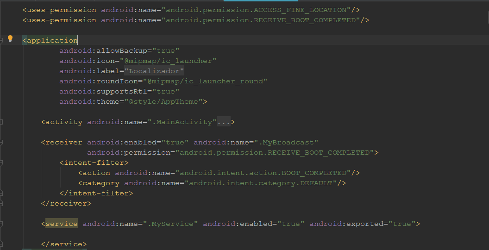

Nesse tutorial vou criar um app que envia sua localização do GPS com o telefone desligado ou em background. Tudo vi se comportar de forma bastante simples, onde teremos a utilização do BroadcastReceiver e um Service para auxiliar no desenvolvimento.
Primeiramente vamos começar com a nossa classe de broadcast, onde ele será responsável por verificar se o boot do telefone foi feito com sucesso e em seguida a classe de serviço vai ser executada.
public class MyBroadcast
extends BroadcastReceiver {
@Override
public void onReceive(Context context, Intent intent) {
if(intent.getAction().equalsIgnoreCase(Intent.ACTION_BOOT_COMPLETED)){
context.startService(new Intent(context, MyService..class ));
}
}
Agora vamos notificar o usuário que o boot completo foi relizado e em seguida vamos enviar nossa localização do GPS utilizando a classe de serviço,
public class MyService extends Service {
@OverrideEssa classe é responsável por pegar os dados do GPS a cada mudança de posição, nela precisamos implementar o método onLocationChanged. Nesse método será responsável por recuprar sua posição atual de acordo com a mudança de local.
public class MyLocation
implements LocationListener {
Context context;
MyLocation(Context context) {
this.context = context;
LocationManager manager = (LocationManager) context.getSystemService(Context.LOCATION_SERVICE);
if (ActivityCompat.checkSelfPermission(context, Manifest.permission.ACCESS_FINE_LOCATION) !=
PackageManager.PERMISSION_GRANTED && ActivityCompat.checkSelfPermission(context, Manifest.permission.ACCESS_COARSE_LOCATION)
!= PackageManager.PERMISSION_GRANTED) {return ;}
manager.requestLocationUpdates(LocationManager.GPS_PROVIDER, 0, 0, this);
}
@Override
public void onLocationChanged(Location location) {
Toast.makeText(context, "LAT: "+location.getLatitude()+"\nLAG: "+location.getLongitude(), Toast.LENGTH_SHORT).show();
}
Em nossa classe principal vamos verificar se a localização do usuário esta ativada, caso não estiver, deve aparecer uma mensagem em que o usuário poderá ativa-la.
public class MainActivity extends AppCompatActivity {
@Override
public void onResume() {
if(ContextCompat.checkSelfPermission(MainActivity.this, Manifest.permission.ACCESS_FINE_LOCATION) ==
PackageManager.PERMISSION_DENIED){
if(Build.VERSION.SDK_INT >= Build.VERSION_CODES.M){
requestPermissions(new String[]{Manifest.permission.ACCESS_FINE_LOCATION}, 0);
}
}
}
Aqui vamos configurar algumas permissões, e também configurar as classes de serviço e de broadcast, desta forma que reiniciar o telefone o app será executado assim que seu boot for completo.
